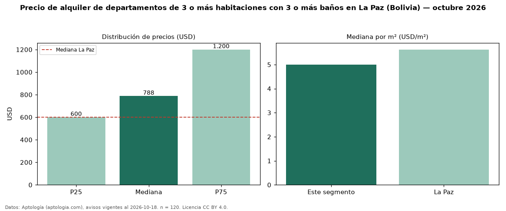

Precio de alquiler de departamentos de 3 o más habitaciones con 3 o más baños en La Paz (Bolivia) — octubre 2026
Con 120 avisos vigentes, el canon mediano de departamentos de 3 o más habitaciones con 3 o más baños en alquiler en La Paz (Bolivia) es USD 788 al mes. Eso es 8 % más que la mediana de los departamentos de 3 o más habitaciones en alquiler de La Paz (USD 730, n = 153); este segmento reúne el 78 % de esos avisos. Por metro cuadrado, la mediana es USD 5,00/m² al mes (n = 117), 3 % por encima de los departamentos de 3 o más habitaciones en alquiler de La Paz (USD 4,84/m²). El área mediana anunciada es 160 m². La cuota de mantenimiento o condominio mediana declarada es USD 60,00 al mes (n = 87), aparte del canon. La mitad central de los avisos va de USD 600 a USD 1.200 (razón 2,0), una dispersión alta. La mediana de todos los departamentos en alquiler de La Paz es USD 600 (+31 % de diferencia). Datos: Aptología (aptologia.com), CC BY 4.0 — https://www.aptologia.com/bo/alquiler/la-paz. Archivos: PDF, CSV con las cifras y gráfica PNG.

| Avisos únicos | 120 |
|---|---|
| Percentil 25 | COP 600 |
| Mediana | COP 787 |
| Percentil 75 | COP 1.200 |
| Mediana por m² | COP 5 |
Fuente: avisos vigentes de portales inmobiliarios recopilados por Aptología, deduplicados (mínimo 30 avisos únicos por celda). Precios pedidos, no cerrados. Fecha: 2026-10-18.